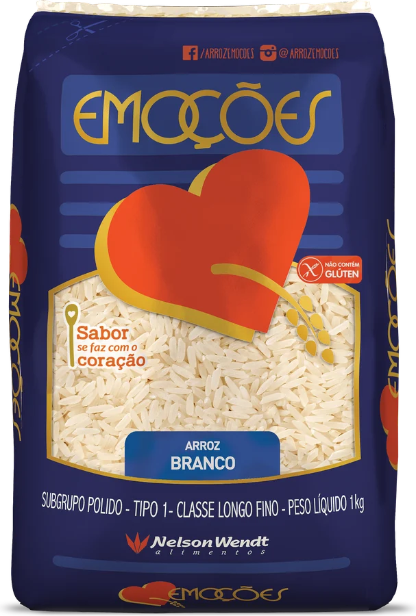
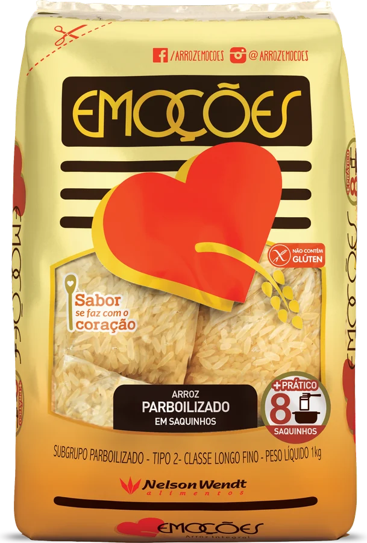
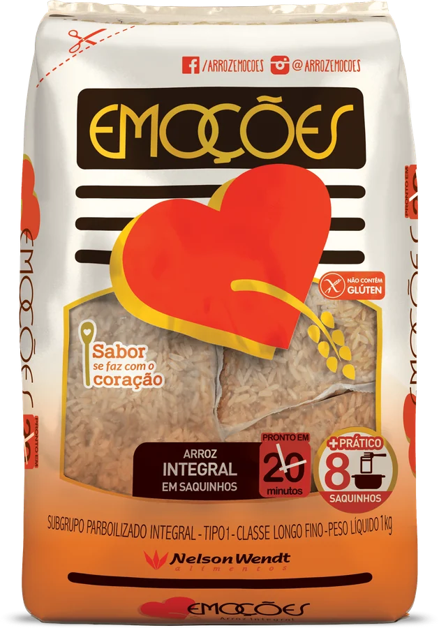
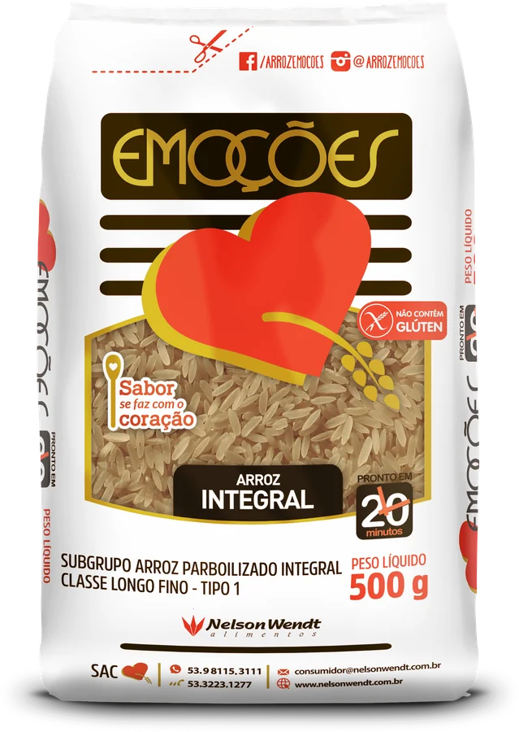
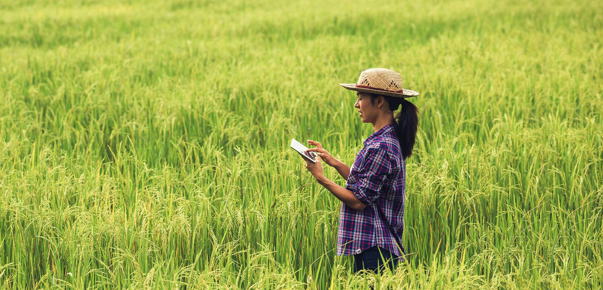

Emoções, Garibaldo, Danói e Amigaço: marcas queridas, feitas com cuidado do campo até a sua casa, e o arroz parboilizado nº 1 em exportação do país.
Ver nossas marcas →



Cada marca tem linhas com características próprias, pensadas para diferentes paladares.
Branquinho e macio, parboilizado cheio de nutrientes, integral rico em fibras, arbório para o risoto e saquinhos prontos para o preparo, sem risco de errar na medida.
Parboilizado
Parboilizado em saquinhos
Integral em saquinhos
Integral 500 g
Controlamos toda a cadeia, seguindo os mais altos padrões de qualidade, para que o arroz que chega até você seja sempre seguro e saboroso.